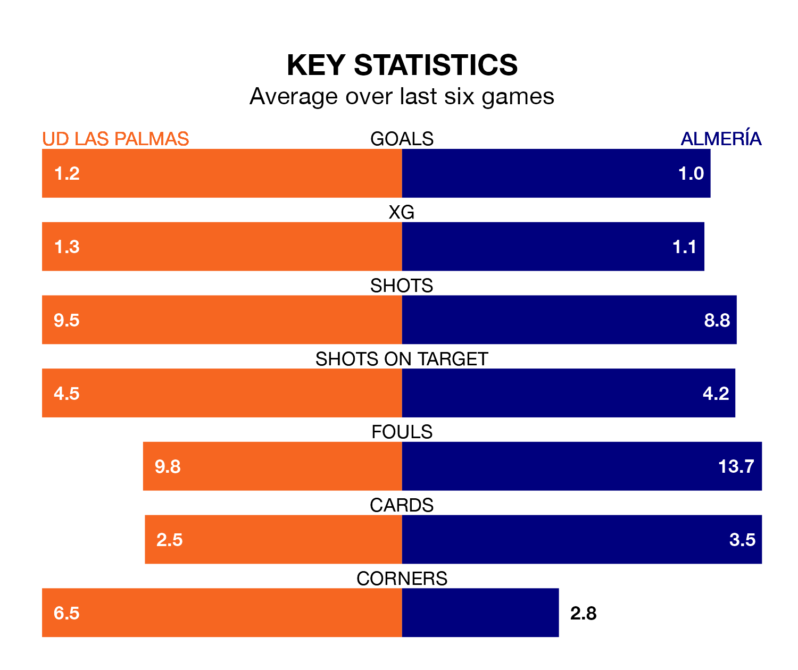

Almería travel to Estadio de Gran Canaria looking to secure a first win in 29 La Liga games against UD Las Palmas on Sunday.
Almería have lost 18 and drawn 10 matches since they last earned three points.
They face a Las Palmas side who have won 10 and drawn seven over that time.
Almería are bottom of the table after 28 games, of which they have won none and drawn 10, earning 10 points.
Las Palmas are 11 places ahead of the visitors in ninth, with 10 wins and seven draws putting them on 37 points.
In the last 10 years, Las Palmas and Almería have played each other on 10 occasions. They won three each, and they drew four times.
On average, Las Palmas scored 0.8 goals and Almería 1.2 in those matches.
Their last meeting was on October 28, when Las Palmas won 2-1 away.
With 27 goals in 28 games so far this season, Almería are scoring at below the league average rate with 1.0 goals per game. And they are conceding more than average, letting in 57 goals at a rate of 2.0 per game.
The home side are also below average scorers, with 1.0 goal per game, compared to a league average of 1.3. They have conceded 1.1 goals per game.
Las Palmas's last match was on March 10, a 2-0 loss against Athletic Club Bilbao.
Almería drew 2-2 with Sevilla last time out, on Monday, with Adrián Embarba and Marko Milovanović on the scoresheet.
Sunday's match will be refereed by Víctor García Verdura, who has taken charge of 13 La Liga games so far this season, issuing four red cards and booking 56 players. He has awarded six penalties.
The last Las Palmas game García Verdura refereed was a 1-0 away loss to Real Betis on November 26. His last Almería match was their 0-0 draw at home against Athletic Club Bilbao on February 12.
Updated: 15:10 (UTC), 15/03/24